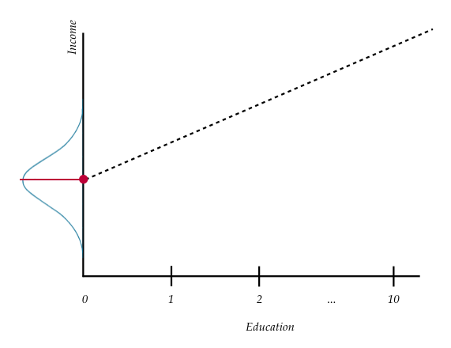
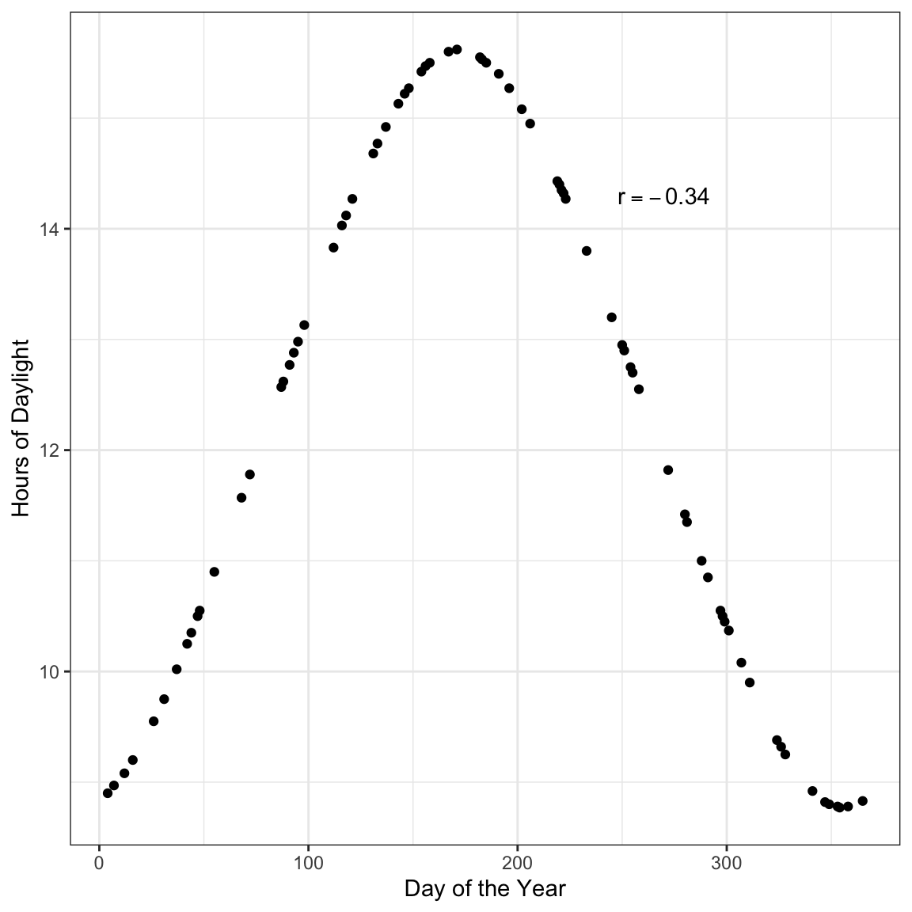

In this set of notes, you will continue your foray into regression analysis. To do so, we will continue our analysis of the riverview.csv data (see the data codebook) to examine whether education level is related to income. To begin, we will load several libraries and import the data into an object called city. We will also create the scatterplot to show the relationship between education level and income.
Scatterplot displaying the relationship between employee education levels and incomes.
# Create scatterplotggplot(data = city, aes(x = education, y = income)) +geom_point() +theme_bw() +xlab("Education (in years)") +ylab("Income (in U.S. dollars)")
Scatterplot displaying the relationship between employee education levels and incomes.
The scatterplot suggests that there is a positive, linear relationship between education level and income for the 32 employees in our sample. This suggests that employees that have higher education levels tend to also have higher incomes. The magnitude of the relationship seems large as the slope of the relationship seems quite steep, indicating that even small changes in education level are associated with a big change in income. This relationship seems moderately strong, with the data clustered somewhat close to the line that describes this relationship. Lastly, there do not seem to be any potential outliers or extreme observations in the data.
Recall that the scale chosen in the plot can influence our perception of the magnitude of the relationship, as well as the strength of the relationship. Because of this, we typically compute and report a numerical summary measures to quantify both of these features. To quantify the magnitude of the relationship, we will compute the slope of the line that models the data. To do this, we will fit a regression model to the data. There are a couple ways that statisticians quantify the strength of the relationship, the most common method being to compute the correlation coefficient.
7.1 Statistical Model: Expressing the Relationship in a Mathematical Equation
To fit a regression model to the data, we need to use the functional form of the relationship to write a mathematical description (i.e., an equation) of how employees’ education levels are related to their incomes. This description is referred to as the statistical model. Since the relationship’s functional form seems reasonably linear, we will use a linear model to describe the data. We can express this model mathematically as,
\[
\text{Income}_i = \beta_0 + \beta_1(\text{Education Level}_i) + \epsilon_i
\] In this equation,
\(\text{Income}_i\) is an employee’s income; it has an i subscript because it can vary across employees.
\(\beta_0\) is the intercept of the line that best fits the data; it does not vary across employees, so it has no i subscript.
\(\beta_1\) is the slope of the line that best fits the data; it does not vary across employees, so again there is no i subscript.
\(\text{Education Level}_i\) is the education level for an employee; it has an i subscript because it can vary across employees.
\(\epsilon_i\) is the error term; it has an i subscript because it can vary across employees.
The general form of the simple linear regression model is:
\[
Y_i = \beta_0 + \beta_1(X_i) + \epsilon_i
\]
In this equation,
\(Y_i\) is the outcome/response value.
\(\beta_0\) is the intercept of the line that best fits the data.
\(\beta_1\) is the slope of the line that best fits the data.
\(X_i\) is the predictor value.
\(\epsilon_i\) is the error term.
The linear statistical model (i.e., the regression model) can be separated into two components: a systematic (or fixed) component and a random (or stochastic) component.
The systematic (fixed) part of the equation gives the mean value of Y given a particular X-value. The mean of Y given a particular X-value is referred to as a conditional mean of Y. The notation for the conditional mean of Y given a particular X value is \(\mu_{Y \vert X_i}\). We express the systematic part of the linear regression model mathematically as,
\[
\mu_{Y \vert X_i} = \beta_0 + \beta_1(X_i)
\]
In our example, the systematic part of the model would produce the mean income for employees who have a particular education level. For example the mean income for all employees with an 8th-grade level of education, or the the mean income for all employees with a 10th-grade level of education.
Note that the systematic part of the equation does not include the error term. The error term is a part of the random component of the model. Statisticians also use \(\hat{Y_i}\) to indicate the conditional mean of Y at a particular X. Thus, the systematic part of the linear regression model can also be written as,
\[
\hat{Y_i} = \beta_0 + \beta_1(X_i)
\]
The terms \(\beta_0\) and \(\beta_1\) in the systematic part of the model are referred to as the regression parameters. One of the primary goals of a regression analysis is to estimate the values of the regression parameters (i.e., the intercept and slope terms). Thus the systematic part of the regression model is a description, in mathematical form, of how the conditional mean Y is related to X. The equation here indicates that the conditional mean of Y (\(\hat{Y_i}\)) is a linear function of X. This implies that the conditional mean value of Y differs by a constant amount for a constant difference in X.
For example, the difference between the mean income for those employees who have 10 years of education and those that have 11 years of education is the same as the difference between the mean income for those employees who have 17 years of education and those that have 18 years of education. Or, the difference between the mean income for those employees who have 4 years of education and those that have 8 years of education is the same as the difference between the mean income for those employees who have 20 years of education and those that have 24 years of education.
7.1.2 Visual Representation of the Regression Model
To help better understand the model, consider the following plot:
Plot displaying conditional distribution of Y at several X values. The OLS fitted regression line (dotted) is also shown. The red points show the mean value of Y for each conditional distribution.
At each value of X there is a distribution of Y. For example, there would be a distribution of incomes for the employees with an education level of 10 years (in the population). There would be another distribution of incomes for the employees with an education level of 11 years (in the population). And so on. These are the conditional distributions of Y.
Each conditional distribution of Y has a mean; the conditional mean or \(\hat{Y_i}\). These conditional means can be connected using a line. This is what it means to be able to express the conditional mean of Y as a linear function of X, or to say that the relationship between X and Y is linear.
7.1.3 Random Part of the Statistical Model
From the visual representation of the model, we can see that there is a distribution of Y-values at each X-value; this is represented by the normal distributions in the picture. In our example, there are many employees who have the same education level, but have different incomes. The error term in the statistical model accounts for this variation in Y for those cases that have the same X-value. Mathematically we can understand this by re-writing the statistical model, substituting \(\mu_{Y \vert X_i}\) into the systematic part of the model.
This equation implies that each observed Y-value is the sum of the conditional mean value of Y (which is based on the X-value) and some residual (or error) term. Re-arranging the terms, we can mathematically express the residual term as,
\[
\epsilon_i = Y_i - \mu_{Y \vert X_i}
\]
Or, using the \(\hat{Y_i}\) notation,
\[
\epsilon_i = Y_i - \hat{Y_i}
\]
To compute an observation’s residual, we compute the difference between the observation’s Y-value and its conditional mean value. When the observed value of Y is larger than the conditional mean value of Y the residual term will be positive (underprediction). If the observed value of Y is smaller than the conditional mean value of Y the residual term will be negative (overprediction).
To further understand the residual term, consider the plot below. This figure shows the relationship between education and income we plotted earlier, and also includes the regression line.
Scatterplot displaying the relationship between employee education levels and incomes. The OLS fitted regression line is also displayed.
Consider the three employees that have an education level of 10 years. The conditional mean income for these three employees is approximately $37,800. This is denoted by the blue point. Remember, the conditional means are on the regression line. The error (residual) term allows for a discrepancy between the conditional mean of Y and the observed Y. In other words, none of these three employees have an actual income of $37,800. The residual represents the difference between the employee’s observed income and the conditional mean income based on their education level.
Graphically, the residual is represented by the vertical distance between the line and a given point on the scatterplot. Some of those points are above the line (they have a positive residual) and some are below the line (they have a negative residual). Also note that for some observations the error term is smaller than for others.
7.2 Estimating Parameters in the Regression Model
The regression model describes the relationship between Y-values and X-values in the population. Every term in the model denoted using a Greek letter is an unknown parameter in this model. In the model we have written there are three unknown parameters denoted in the model: the intercept term (\(\beta_0\)), the slope term (\(\beta_1\)), and the residual term (\(\epsilon_i\)).1
In most statistical analyses, you will use a sample of data (not the entire population) to estimate the parameter values. Because a sample is only a subset of the population, the values we obtain for the parameters are imperfect estimates. To denote that the parameters are sample-based estimates, we add a hat to each parameter we are estimating. For example, estimates of the parameter estimates of \(\hat\beta_0\) and \(\hat\beta_1\) (referred to as regression coefficients) are typically reported in a regression analysis and should include hats.
Applied researchers and statisticians tend to focus their analysis on the systematic (fixed) part of the model, and are thus often most interested in the values of the regression coefficients. After fitting the model to data, the estimated conditional means can be expressed mathematically as:
Or, using the notation \(\hat{Y}_i\) rather than \(\hat\mu_{Y \vert X_i}\), as:
\[
\hat{Y_i} = \hat\beta_0 + \hat\beta_1(X_i)
\]
We use the hats when we are indicating sample-based estimates of these values, so hats should be used when you are reporting the values obtained after using a sample of data to obtain the values.2 The two estimated parameters of interest here (\(\hat\beta_0\) and \(\hat\beta_1\)) are referred to as the estimated regression coefficients, and this equation is often referred to as the fitted regression equation, or simply the fitted equation.
7.2.1 Estimating Residuals
Note that we can also use the estimated regression coefficients to obtain estimates for the residuals, often referred to as the observed residuals. Here we make use of the earlier idea that the residual term was the difference between the observed value of Y and the conditional mean of Y for a given X-value. Mathematically,
\[
\epsilon_i = Y_i - \mu_{Y \vert X_i}
\]
Once we use data to obtain estimates for the intercept and slope (\(\hat\beta_0\) and \(\hat\beta_1\)) we can substitute those into the fitted equation and obtain an estimate for the conditional mean (\(\hat{\mu}_{Y \vert X_i}\)). This value can then be used to obtain an estimate for the residual.
Remember, the hat on the residual indicates it is an estimate based on values obtained from the data!
7.3 Fitting a Regression Model to Data Using R
To fit the regression model to data using R, we will use the lm() function. The syntax for this function looks like this:
lm(outcome ~ 1 +predictor, data =dataframe)
where outcome is the name of the outcome/response variable, predictor is the name of the predictor variable, and dataframe is the name of the data frame. (The 1 on the right side of the tilde tells R to include the intercept in its computation.) When we fit a regression model in R, we will also assign the output to a new object in R. Below, we fit the model using education level to predict income. Here the output is assigned to an object called lm.a. We can print the regression parameter estimates by typing the lm() object name and hitting enter.
# Fit regression modellm.a =lm(income ~1+ education, data = city)# Print regression coefficientslm.a
Call:
lm(formula = income ~ 1 + education, data = city)
Coefficients:
(Intercept) education
11.321 2.651
Here the parameter estimates (or regression coefficients) are:
\(\hat{\beta}_0 = 11.321\)
\(\hat{\beta}_1 = 2.651\)
Remember that these are estimates and need the hats. The systematic part of the fitted regression model (or fitted equation) is:
The estimate for the intercept was 11.321. Graphically, this value indicates the value where the line passes through the Y-axis (i.e., Y-intercept). As such, it gives the \(\hat{Y}_i\) or predicted value when \(X=0\). Algebraically we get the same thing if we substitute 0 in for \(X_i\) in the fitted regression equation.
To interpret this value, remember that \(\hat{Y}_i\) is a conditional mean. In this case, it represents the model predicted mean income for all employees that have an education level of 0 years. Graphically this looks like the following.

Figure 7.1: Plot displaying conditional distribution of Y at \(X=0\). The OLS fitted regression line (dotted) is also shown. The red points show the mean value of Y for this conditional distribution—which corresponds to the intercept value of the regression line.
Interpreting the intercept coefficient from our example,
The model predicted mean income for all employees that have an education level of 0 years is $11,321.
When interpreting the intercept, beware of extrapolation. Extrapolation is making a prediction outside of the range of the data used to fit the model. For example, in our interpretation, we are making a prediction of the mean income for emplyees that have an education level of 0 years. The smallest education level in our data is 8 years. Because 0 is outside the range of our data, this prediction is an extrapolation. The problem with extrapolation is that we don’t know if the relationship continues to be linear outside the range of our data. If it isn’t linear, then the prtediction we make will be quite errant.
7.3.2 Slope Interpretation
Recall from algebra that the slope of a line describes the change in Y versus the change in X. In regression, the slope describes the predicted change in \(\hat{Y}\) for a one-unit difference in X. In our example,
Again, because \(\hat{Y}\) is a conditional mean, the slope represents the difference in predicted mean incomes for each one-year difference in education level. Graphically,
Plot displaying conditional distribution of Y at \(X=0\) and \(X=1\). The OLS fitted regression line (dotted) is also shown. The red points show the mean value of Y for these conditional distributions—the relative change which corresponds to the slope value of the regression line.
Interpreting the slope coefficient in our example,
Each one-year difference in education level is associated with a model predicted difference of $2,651 in mean income.
To better understand this, consider the mean income for city employees with three different education levels. The first set of employees have an education level of 10 years. The second set has an education level of 11 years, and the third set has an education level of 12 years. Now let’s compute each set of employees’ mean income using the estimated regression coefficients.
Each set of employees’ education levels differ by one year (10 to 11 to 12). The difference in predicted mean incomes for these employees differs by 2.651 thousand dollars.
7.3.3 Estimating Residuals
Consider the 25th case in the data frame.
city |>filter(row_number() ==25)
This employee (Employee 25) has an education level of 20 years (\(X_{25}=20\)). Her income is 54.672 thousand dollars (\(Y_{25}=54.672\)). Using the fitted regression equation, we can compute the model predicted mean income for employees with 20 years of education as,
# Y_hat = b0 + b1 * X11.321+2.651*20
[1] 64.341
\[
\hat{Y}_{25} = 64.341
\]
We could also report this using the conditional mean notation,
\[
\hat\mu_{Y \vert X=20} = 64.341
\]
Now we can use the estimated conditional mean to also compute Employee 25’s residual.
# e = Y - Y_hat54.672-64.341
[1] -9.669
Using mathematical notation,
\[
\hat\epsilon_{25} = -9.669
\]
The negative residual, \(\hat\epsilon_{25} = -9.669\), suggests that this employee earns $9,669 less than the average predicted income for employees with 20 years of education. We can also represent these values graphically.
Plot displaying the OLS fitted regression line (blue) between employee education levels and incomes. The 25th employee’s observed data (black dot) is plotted, and a visual representation of the employee’s residual (red line) is also displayed.
7.4 Correlation: Quantifying the Strength of the Relationship
The correlation coefficient is a numerical summary of the strength of a linear relationship. To compute the correlation coefficient, we use the correlate() function from the {corrr} package. We can use the dplyr-type syntax to select the variables we want correlations between, and then pipe that into the correlate() function.
For example, to compute the correlation coefficient between education levels and incomes, we use the following syntax:
city |>select(income, education) |>correlate()
The order of attributes in the select() function is irrelevant. However, typically the response (or outcome) variable is the first variable provided in the select() function, followed by the predictor.
The correlation between education level and income is 0.795. Mathematically we use the lower-case letter “r” to indicate a correlation. In our example,
\[
r_{\text{Education Level, Income}} = 0.795
\]
As we interpret the value of a correlation coefficient, keep in mind the following properties:
Correlation has no units, it is just a value.
Correlation coefficients always fall between \(-1\) and \(+1\), that is \(-1 \leq r \leq +1\).
The sign of the correlation coefficient (positive or negative) indicates the direction of the relationship.
The size of the correlation coefficient gives us an indication of the strength of the relationship. Here are some guidelines to help you think about the strength of the relationship:
A value of 0 would indicate no relationship.
Values around \(-0.2\) or \(+0.2\) might indicate a weak linear relationship.
Values around \(-0.5\) or \(+0.5\) might indicate a moderate linear relationship.
Values around \(-0.8\) or \(+0.8\) might indicate a strong linear relationship.
Values of \(-1\) or \(+1\) indicate a perfect linear relationship (super-duper strong).
These guidelines may or may not be useful. You really have to know the substantive literature in your discipline to know for sure what values indicate a strong or weak relationship. For example, in the educational sciences most of the relationships we see with educational outcomes (e.g., GPA, test scores) have correlation values that are less than 0.4. So \(r \approx 0.5\) would often be considered a strong relationship.
Returning to our example, the correlation coefficient of 0.795 indicates a strong linear relationship between education level and incomes. The positive value of the correlation coefficient also indicates that the relationship between education level and income is positive. That is, employess with higher education levels also tend to have higher incomes.
7.4.1 Correlation Only Measures a Linear Relationship
It is important to keep in mind that the correlation coefficient is only useful as a measure of the strength of the relationship when the relationship between variables is linear. Here is an example where the correlation coefficient would be misleading about the strength of the relationship.

Figure 7.2: Hours of daylight versus day of the year for \(n=75\) days in Minneapolis.
Here there is a perfect relationship between day of the year and hours of daylight. If you fitted a nonlinear model here, your “line” would match the data exactly (no residual error!). But the correlation coefficient does not reflect that. The correlation coefficient would suggest that the relationship between day of the year and hours of daylight is weak (\(r=-0.34\)).
Another situation in which correlation can mislead is when you have subpopulations in your data. Here is an example of that.
Figure 7.3: Salary versus neuroticism (0 = not at all neurotic; 7= very neurotic) as measured by the Big Five personality survey for \(n=1000\) employees from a Fortune 500 company.
Figure 7.4: Salary versus neuroticism (0 = not at all neurotic; 7= very neurotic) as measured by the Big Five personality survey for \(n=1000\) employees from a Fortune 500 company. The data are colored by education level.
If we treat these data as one population (an assumption for using the correlation) the relationship between neurotocism and salary is positive; employees who are more neurotic tend to have higher salaries, on average. However, if we account for education level, the relationship between neurotocism and salary is negative for each of the education levels; once we account for education level, employees who are more neurotic tend to have lower salaries, on average. This reversal of the direction of the relationship once we account for other variables is quite common (so common it has a name, Simpson’s Paradox) and makes it difficult to be sure about the “true” relationship between variables in observational data.
You should always create a scatterplot to examine the relationship graphically before computing a correlation coefficient to numerically summarize it.
7.5 Answering the Research Question
Remember that this whole analysis was driven because we wanted to answer a question, namely whether education level is related to income for the Riverview employees. The results from the regression analysis allow us to answer this question.
To answer the question of whether education level is related to income, a linear regression model was fitted to the data using ordinary least squares estimation. The results of this analysis suggested that education level is positively related to income for the 32 employees (\(\hat\beta_1 = 2.65\)). Each year of education is associated with a $2,651 difference in income, on average. Additionally, the evidence suggests that this relationship is quite strong (\(r=0.795\)).
Here the regression analysis provides a quantitative summary of the relationship between education level and income. It provides us with information about the direction of the relationship (positive) and the magnitude of that relationship. The correlation coefficient adds to this description by helping quantify the strength of the relationship.
Although these metrics can give us a description of the relationship, it is only for the sample of data you looked at (i.e., for these 32 employees). To make further statements about whether there is a relationship between education level and income in a broader population (e.g., all Riverview employees, or all California residents), we need more information, namely whether the sample is representative of the larger population and also statistical information about the amount of sampling error we have. (We will cover sampling error in Chapter 5.)
Optional: Effect of the Predictor (Calculus Edition)
The slope is often referred to as the effect of the predictor, and mathematically indicates the rate-of-change in the outcome as the predictor changes. How much does the outcome change for a one-unit change in the predictor? The way that mathematicians measure the rate-of-change is by computing the derivative of a function. In a simple regression, we would compute the derivative of the fitted equation:
In a linear function, the rate-of-change is the slope of the line.
Technically there are many unknown residuals, one for each case, but the assumptions we put on the linear model make it so that we only care about the variance of the residuals, hence a single unknown.↩︎
Sometimes people use Roman letters when referring to sample estimates rather than hatting the Greek letters. For example, the sample-based equation might be denoted: \(\hat{Y}_i = b_0 + b_1(X_i) + e_i\).↩︎